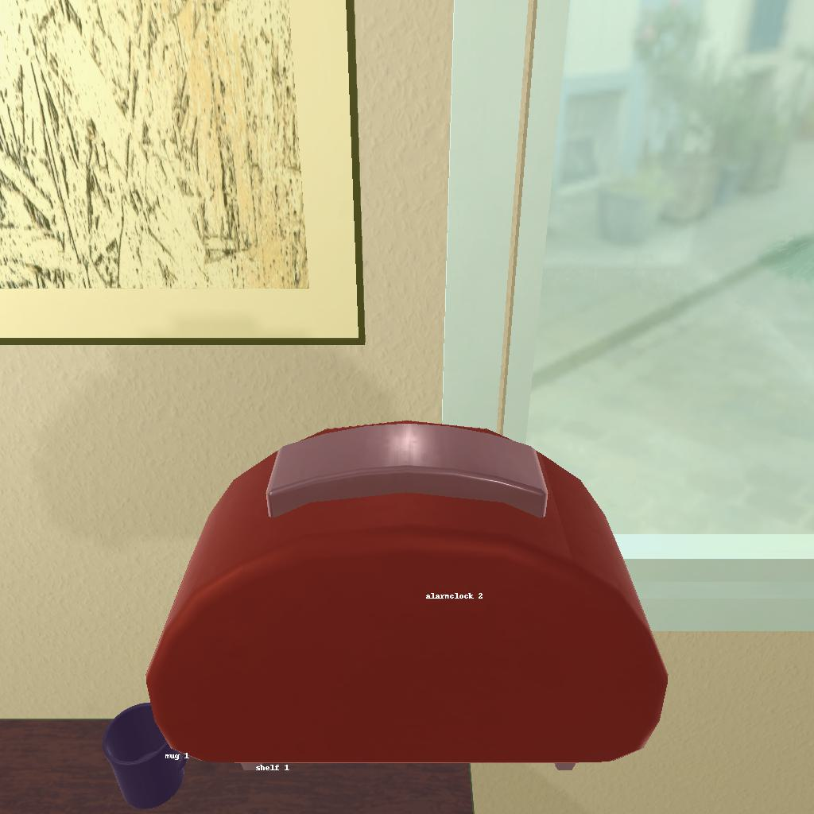
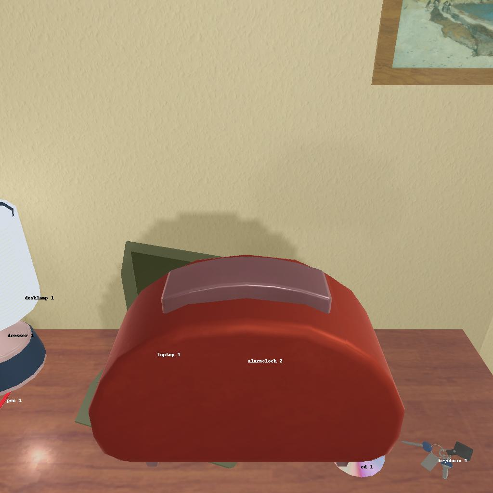

---------------------------------------------------------task: 1---------------------------------------------------------
--------------------------------------------------------------------------------------------------------------------------------------------------------------------
--------------------------------------------------------------------------------------------------------------------------------------------------------------------
Step:--------------------------------------------------------------------------13-------------------------------------------------------------------------------
----------------------------------------
VLM Prompt:
Image1:
Image2:
**Instruction**
1. Analyze the provided image to identify all visible household objects, focusing on those relevant to the task description "examine the alarmclock with the desklamp."
2. Use the analysis of the image and the task hint "The agent must find an object of the desired type, locate and turn on a light source with the desired object in-hand." to answer the question: what is the most reasonable action in the choices for the task description "examine the alarmclock with the desklamp"?
4. Decide and write the answer using the template: The answer is: (i): , where i is the real number. If there is no desired object in the image, search every place based on **Initial Observation** to find the object. And if no one is exactly correct, choose a similar answer.
**Initial Observation**
You are in the middle of a room. Looking quickly around you, you can see bed (1), dresser (1), drawer (1-10), garbagecan (1), shelf (1-7)
**Answer Choices**
(1): go to bed 1
(2): go to dresser 1
(3): go to drawer 1
(4): go to drawer 2
(5): go to drawer 3
(6): go to drawer 4
(7): go to drawer 5
(8): go to garbagecan 1
(9): go to drawer 6
(10): go to drawer 7
(11): go to drawer 8
(12): go to drawer 9
(13): go to drawer 10
(14): go to shelf 2
(15): go to shelf 3
(16): go to shelf 4
(17): go to shelf 5
(18): go to shelf 6
(19): go to shelf 7
(20): put alarmclock 2 in/on shelf 1
(21): examine shelf 1
**Answer**
Let's think step by step by following the instructions.
----------------------------------------
----------------------------------------
Original Response:
First, we need to identify all visible household objects relevant to the task description. In the image, we can see an "alarmclock 2" on "shelf 1" and a "mug 1" on the same shelf. There is no desklamp visible in the image.
Based on the task hint, the agent must find an object of the desired type (an alarm clock), locate and turn on a light source (desklamp) with the desired object in-hand. Since the alarm clock is already identified in the image, the agent does not need to search for it. However, the desklamp is not visible, and it may be located somewhere else in the room, likely on one of the shelves, dresser, or drawers.
Considering the initial observation, the agent should look for the desklamp in the dresser or drawers since shelves are already visible in the image and do not contain a desklamp. There is no indication that the desklamp would be in the bed or garbage can.
The most reasonable action based on the task description and the available options is to search the dresser or drawers for the desklamp.
The answer is: (2): go to dresser 1
----------------------------------------
----------------------------------------
>>> Refine Original VLM Response and Get Pure Action: go to dresser 1
----------------------------------------
-----------------------------------------------------------------
Running time: 13.091156482696533 seconds
Total Money: 0.6083500000000001
-----------------------------------------------------------------
-----------------------------------------------------------------
Text Observation:You arrive at loc 1. On the dresser 1, you see a desklamp 1, a laptop 1, a keychain 1, a cd 1, and a pen 1.
-----------------------------------------------------------------
SUCCEED